ssc install spmap, replace
ssc install geo2xy, replace
ssc install shp2dta, replace
ssc install schemepack, replace
ssc install scheme-burd, replace
ssc install colrspace, replace
ssc install palettes, replace
ssc install egenmore, replace
ssc install outreg2, replaceStata Lab 1 Mapping Growth: Basic Maps
Purpose
🗺️ One goal of this course is to teach students how to identify a good map – one which is clear, informative and attractive – and familiarise students with the commands which allow the creation of these maps in Stata.📈
In addition, your lab paper (📅 due March 3rd) requires that you include at least 6 maps, so it is worth concentrating in the labs and making use of these resources.📝
📚 This document is intended to allow you to keep up with the Stata Lab 1 that we will work through in class.📊
You can read the document on this website, or download the same information in pdf format here📚.
It will include the commands the we use and the output, as well as some hints and tips that will be useful during your projects, I hope.🤞
Structure
Today we will be covering the following topics:
Installing basic packages: We will go over how to install the necessary packages in order to run our analysis. This will include packages such as “spmap” and “geo2xy” which will allow us to create maps in Stata.
Data types: We will discuss the different types of data that we will be working with in this lab. Specifically, we will be using time series data from a spreadsheet and map data from a shapefile. It is important to understand the structure and format of these data types in order to properly analyze and visualize them.
Basic mapping: Once we have our data, we will learn how to draw a basic map using the “maps” and “maptools” packages. We will go over how to import the shapefile data, how to define the map scale, and how to add different layers to the map such as points, lines, and polygons.
By the end of this lab, you should have a solid understanding of how to install necessary packages, how to work with different types of data, and how to draw a basic map in Stata.
📊🗺️💻 Let’s get started!
Getting started
Given that you have encountered Stata previously in your studies, I will not spend undue time explaining the basics. If you want to brush up on Stata’s syntax, I recommend having a look at these slides from Oscar Torres-Reyna, or this set of Youtube videos From Sebastian Wai. I’ve put together a comprehensive set of resources on this page here.
Install additional programs and set-up
First we need to install the packages in Stata that we will make use of. Please do this before our lab session in order to save time.
We use the ssc install command, as follows:
Note
To run do-files click the “run-button” or highlight the lines of code and hit ctrl + D (Windows) or shift + cmd + D (Mac)
Running the command should produce output in the console that looks like this:
. ssc install geo2xy, replace
checking geo2xy consistency and verifying not already installed...
installing into c:\ado\plus\... installation complete.
...
Always comment your code
In Stata you can comment your code in one line
# like so
Or if you want to write a longer string
/*You can put your longer string of text inside a set of slashes and stars*/
Setting a directory
It is useful to put all of your work inside a specific file directory. This way, Stata knows where to look for your files and where to save output, like regression tables.
The path to my folder where I have the files for this lab is:
C:/Users/User/Documents/Recon/EOSE09/stata_files/
If you have a Mac, it will look something like this:
Users/Jonathan/Documents/Stata-lab/
If you want to change the settings on your Mac to display the file path in your Finder window, follow this link.
To tell Stata that this is where I want it to look for my files, I’ll use the cd (current directory) command in my do-file.
cd "C:/Users/User/Documents/Recon/EOSE09/stata_files/" # set your directoryIf successful, in the console I will see the following output:
.
cd "C:/Users/User/Documents/Recon/EOSE09/stata_files/" # set your directory
C:\Users\User\Documents\Recon\EOSE09\stata_files
You can call the help window by typing help into the console, and set your Stata version for compatability reasons with the version command, like so:
help # Stata's help function; cf. also the web or Statalist
version 16.1 # version controlData types
In order to draw a map in Stata, we need to combine the information from our shapefile (which contains the geographic information such as the shape and location of the features on the map) with the information from our spreadsheet (which contains the data we want to display on the map, such as population or income).
The process of combining these two types of data is called “joining” or “merging” and it allows us to link the attributes from the spreadsheet to the geographic features in the shapefile. Without joining the data, we would only have the shape of the features on the map, but not the information we want to display.
You are likely familiar with the first type of data, it is a wide dataset in an excel spreadsheet.
The second is a shapefile - a file that stores the information a software program needs to draw a map.
Shapefiles 🗺️📊💻📂
A shapefile is a type of data file that is used to store geographic information, such as the location of streets, buildings, and other features on a map. It is a common format used in geographic information systems (GIS) software.
A shapefile consists of four components with different file extensions:
.shp (shapefile): This file stores the actual geometric data for the features in the map, such as the shape of a street or a building.
.shx (shape index): This file stores the index of the geometric data in the .shp file, which is used to quickly access the data in the correct order.
.dbf (database file): This file stores the attribute data for the features in the map, such as the name of a street or the population of a building.
.prj (projection file): This file stores information about the coordinate system and projection used for the data in the shapefile. This is important for ensuring that the map is displayed correctly and that measurements are accurate.
Together, these four files make up a complete shapefile and are necessary to properly display and analyze the geographic information.
Importing the Roses-Wolf dataset from Excel into Stata
At the moment, the database we want to use to draw our maps is in an excel sheet.
It has many tabs, and some lines are filled with headings before the data begins, as shown here:
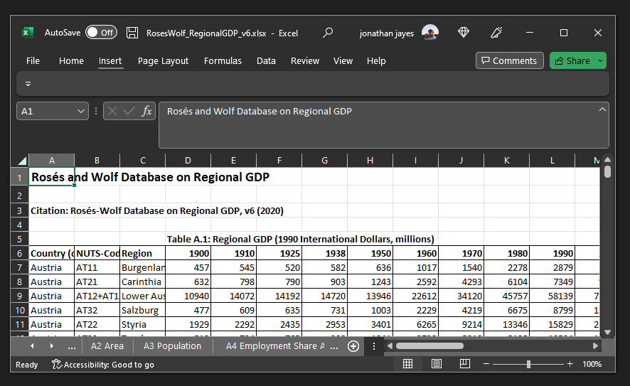
What we want to do is import the data from each tab, and append it together.
import excel using RosesWolf_RegionalGDP_v6.xlsx, sheet("A1 Regional GDP") firstrow cellrange(A6:O179) clear # import Excel sheet
rename (D E F G H I J K L M N O) (year_1900 year_1910 year_1925 year_1938 year_1950 year_1960 year_1970 year_1980 year_1990 year_2000 year_2010 year_2015)This is what the data now looks like inside Stata. It is a wide dataframe, with 173 rows (the number of regions) and 15 variables (3 identifiers and 12 years worth of data)
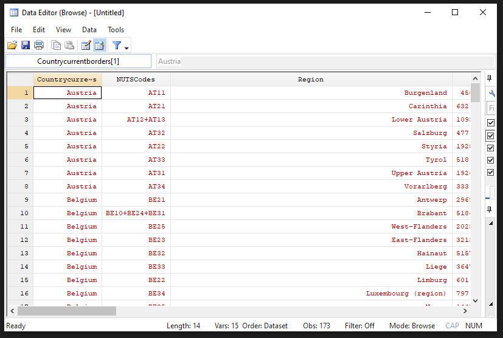
Tip
Recall that the Roses Wolf database has geographic data on GDP and population at the nomenclature of territorial units 2 (NUTS-2) level, from 1900 to 2015.
If you want to have a look at this data in more detail, have a look at this Shiny app.
Next we want to be sure that Stata is reading in the values as numbers rather than text. For this we use the destring command.
import excel using RosesWolf_RegionalGDP_v6.xlsx, sheet("A1 Regional GDP") firstrow cellrange(A6:O179) clear allstring `# we import each sheet in the Excel file separately and save it as one file`
rename (D E F G H I J K L M N O) (year_1900 year_1910 year_1925 year_1938 year_1950 year_1960 year_1970 year_1980 year_1990 year_2000 year_2010 year_2015)
destring year_*, replaceIf there are non-numerical values in a string you cannot use destring and should not use the force-option as it would create missing values A better approach is to check all cases that are non-numerical and replace them (e.g. change “one” to “1”)
Other common data cleaning commands could include:
# tab var1 if missing(real(var1)) # replace var1 ... if ... # destring var1, replace
Next we want to take the data from a wide format to a long format. A long format means that each row is an observation, each column is a variable, and each cell has just one value in it.

The reshape command in Stata is used to change the shape of the data from one format to another. In this specific case, the reshape long option is used to change the data from a “wide” format to a “long” format.
The variables that come after “year_” are the variables that will be converted from wide to long format. In this case, “year_” is not a variable, it is a prefix of the variables that will be reshaped.
The option i(NUTSCodes Region Countrycurrentborder) specifies the identifier variables, which are variables that uniquely identify the observations in the dataset and will not be reshaped. In this case, “NUTSCodes”, “Region”, and “Countrycurrentborder” are the identifier variables.
The option j(year) specifies the variable that will be used as the new variable name for the reshaped variables. In this case, the new variable name will be “year” and it will be the identifier of the year of the data.
We save the data as a .dta file with the save command. The replace option overwrites any file with the same name in the directory.
help reshape # Read up about the command here
reshape long year_, i(NUTSCodes Region Countrycurrentborder) j(year)
rename year_ regional_gdp_millions
save regional_gdp, replace
Tip
Never overwrite your raw data - this could be a big problem if you haven’t saved it somewhere else. Good practice is to save a copy of your data in a different folder before the analysis, and make any changes through your do-file (e.g. changing “one” to “1” in Stata rather than excel).
Now we can see the data in a long format if we use the browse (br) command:
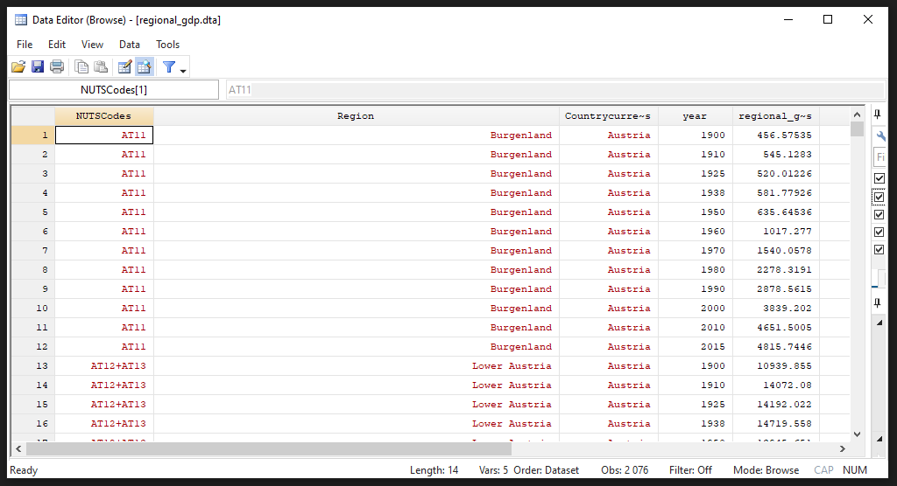
We repeat this process for the remaining sheets in the Excel workbook.
import excel using RosesWolf_RegionalGDP_v6.xlsx, sheet("A1b Regional GDP (2011PPP)") firstrow cellrange(A6:O179) clear allstring # repetition of the steps above for each sheet
rename (D E F G H I J K L M N O) (year_1900 year_1910 year_1925 year_1938 year_1950 year_1960 year_1970 year_1980 year_1990 year_2000 year_2010 year_2015)
destring year_*, replace
reshape long year_, i(NUTSCodes Region Countrycurrentborder) j(year)
rename year_ regional_gdp_2011_ppp_millions
save regional_gdp_2011_ppp, replace
...Importing the shapefiles into Stata
Describe importing a shapefile into Stata
clear # clear the dataset in memory
shp2dta using regions_nuts2, database(regions) coordinates(nutscoord) genid(_ID) replaceNow we have a little data cleaning to do: There are three particular regions that need to be joined together in the Roses-Wolf database in order to be plotted correctly. If we don’t correct these, there will be holes in our map, as shown below:
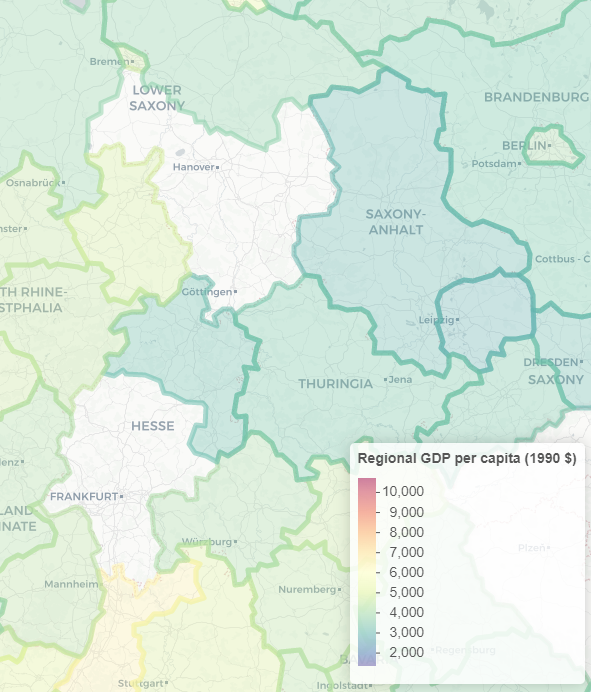
use regions, clear # fixing the identifier of the NUTS_Codes so that the merge below works for all regions in the dataset
replace NUTS_CODE = "AT12+AT13" if NUTS_CODE == "AT123"
replace NUTS_CODE = "DE71+DE72" if NUTS_CODE == "DE712"
replace NUTS_CODE = "DE91+DE92" if NUTS_CODE == "DE912"
save regions, replaceProjections
Map projections are methods used to represent the surface of the Earth on a flat map. Different projections have different properties, such as preserving area, shape, or direction, and each has its own set of distortions. The Mercator projection is a cylindrical projection that was developed in the 16th century for navigation. It is particularly useful for representing the entire globe at once, but it distorts the size and shape of landmasses near the poles.
Mercator popularity
Web Mercator, also known as Google Web Mercator, Spherical Mercator, WGS 84 Web Mercator or WGS 84/Pseudo-Mercator, is a variant of the Mercator projection that is optimized for use on the web. It is the projection used by Google Maps, OpenStreetMap, and many other online mapping services.

Have a look at this link to the Stata forum that explains different projections.
We will use the Albers projection, which is saved as nutscoord.dta in your working directory.
use nutscoord, clear # we use the Albers projection; every projection looks a bit differentLet’s give a gander what the projection looks using the scatter command.
scatter _Y _X
scatter _Y _X, msize(tiny) msymbol(point)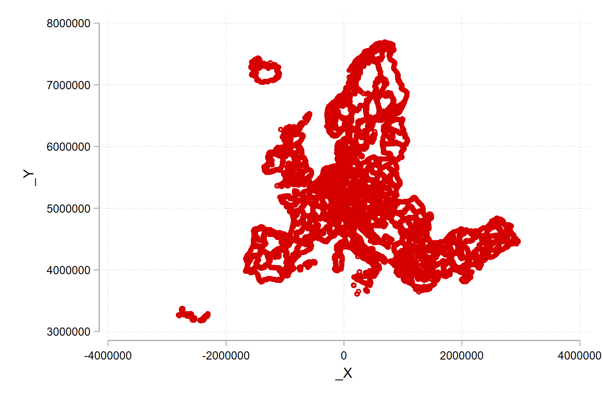
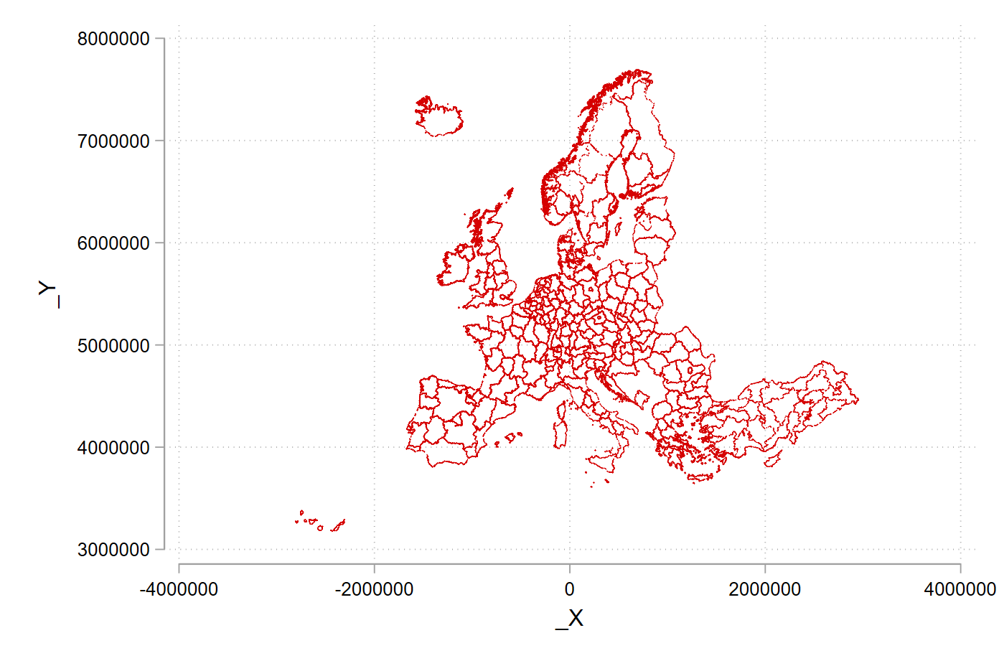
Scatter options
The msize() option in the scatter command is used to set the size of the markers in the graph. The markers can be circles, squares, or other shapes, and the size option controls their overall size. The value of the option can be a number, which represents the size in units of the graph, or a variable name, which represents the size relative to the values of that variable.
The msymbol() option in the scatter command is used to set the shape of the markers in the graph. The markers can be circles, squares, or other shapes, and the msymbol option controls their shape. The value of the option can be a number, which represents the shape, or a variable name, which represents the shape relative to the values of that variable.
You can experiment with other projections, have a look at the geo2xy help file:
help geo2xy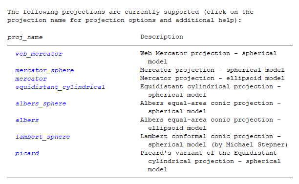
Merge shapefiles and data together
We’re nearly there! Now we have both file types in the correct format in Stata. All that is left to do is merge them together so that we can plot maps with the Roses-Wolf data.
We start by importing our clean, long format data.
use regional_gdp, clear # we merge all created files togetherWe are going to use the merge command. Read more about it by typing help merge into the console.
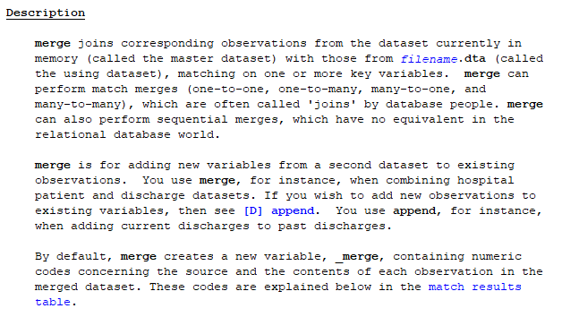
Merge types
1:1 matches occur when each observation in one dataset has a unique match in the other dataset, based on the specified variable(s). This is the most common type of match and is the default behavior of the merge command.
1:m matches occur when one observation in one dataset has multiple matches in the other dataset, based on the specified variable(s). This can happen when there are duplicate values in the specified variable(s) in one of the datasets.
m:m matches occur when multiple observations in one dataset have multiple matches in the other dataset, based on the specified variable(s). This is the least common type of match, as it requires duplicate values in the specified variable(s) in both datasets.
merge 1:1 NUTSCodes year using regional_gdp_2011_ppp # this is a 1:1 merge
drop _mergeYou should get output that looks like so:
. merge 1:1 NUTSCodes year using regional_gdp_2011_ppp # this is a 1:1 merge
Result # of obs.
—————————————–
not matched 0
matched 2,076 (_merge==3)
—————————————–
We now repeat the process for all of our variables in the Roses-Wolf database.
merge 1:1 NUTSCodes year using population, assert(match) nogen
merge 1:1 NUTSCodes year using share_agriculture, assert(match) nogen
merge 1:1 NUTSCodes year using share_industry, assert(match) nogen
merge 1:1 NUTSCodes year using share_services, assert(match) nogenNow we add in area to all of the variables with an m:1 merge
merge m:1 NUTSCodes using area_km2, assert(match) nogen # this is a m:1 merge; there is also a 1:m merges; m:m merges are a bad ideaLet’s fix our nomenclature
rename NUTSCodes NUTS_CODE
merge m:1 NUTS_CODE using regionsLet’d now drop all of the regions for which there is map information, but no data from the Roses-Wolf database.
drop if _merge == 2 # we keep all regions that are merged and delete those for which we have geographical information but no data
drop _merge
order _ID, after(NUTS_CODE)Wonderful! Now we have joined together our geographic information from the shapefiles with the data from the Roses-Wolf database.
Formatting and Creating Variables
This next section is first setting up some calculated variables (e.g. dividing GDP by population for GDP per capita) and secondly adding nice names that are easy to understand what we are up to.
We start by renaming our variables from title case to snake case (where words are in lower case and separated by underscores)
rename Countrycurrentborder country
rename (Region regional_gdp_millions regional_gdp_2011_ppp_millions population_thousands area_km2) (region regional_gdp_1990 regional_gdp_2011 regional_population regional_area) # cleaning the datasetNext we change our GDP and population values from being denominated in millions and thousands to basic levels.
replace regional_gdp_1990 = regional_gdp_1990 * 1000000
replace regional_gdp_2011 = regional_gdp_2011 * 1000000
replace regional_population = regional_population * 1000Next we sum across countries and years to create a summary value for national GDP and national population from the regional values.
bysort country year: egen national_gdp_1990 = total(regional_gdp_1990)
bysort country year: egen national_population = total(regional_population)Creating per capita values at national and regional levels:
gen national_gdp_cap_1990 = national_gdp_1990 / national_population
gen regional_gdp_cap_1990 = regional_gdp_1990 / regional_population
gen regional_gdp_cap_2011 = regional_gdp_2011 / regional_population
sort country region yearCreating a population density variable:
gen population_density = regional_population / regional_area # you often have to calculate new variables, which you then can mapNext we are going to make use of a very powerful command, egen , in combiation with the xtile command to create five groups of regions, based on their where they fall in percentile of regional GDP per capita, for every year which we have data on them.
egen q_regional_gdp_cap_1990 = xtile(regional_gdp_cap_1990), n(5) by(year) # you can change the number of groups
sort country region yearNow we are going to create a variable for GDP per capita at the regional level for each region, relative to the average of the entire sample.
bysort year: egen mean_gdp_cap_eu = mean(regional_gdp_cap_1990)
sort country region year
gen relative_gdp_cap_eu = regional_gdp_cap_1990 / mean_gdp_cap_euHere we do the same for the country level.
bysort year country: egen mean_gdp_cap_country = mean(regional_gdp_cap_1990)
sort country region year
gen relative_gdp_cap_country = regional_gdp_cap_1990 / mean_gdp_cap_countryFinally, we are going to add some nice labels so that when we draw our graphs they get nice legends by default.
In Stata you can have a variable name (e.g. “country”), and a variable label (a long string e.g. “Country in Current Borders”).
label variable _ID "Region ID"
label variable year "Year"
label variable country "Country in Current Borders"
label variable regional_gdp_1990 "Regional GDP in 1990 International Dollars"
label variable regional_population "Regional Population"
label variable employment_share_agriculture "Regional Share of Employment in Agriculture"
label variable employment_share_industry "Regional Share of Employment in Industry"
label variable employment_share_services "Regional Share of Employment in Services"
label variable regional_area "Area in KM2"
label variable national_gdp_1990 "National GDP in 1990 International Dollars"
label variable national_gdp_cap_1990 "National GDP per Capita in 1990 International Dollars"
label variable regional_gdp_cap_1990 "Regional GDP per Capita in 1990 International Dollars"
label variable national_population "National Population"
format region NUTS_CODE %20s
save regional_dataset, replaceSummary statistics
In this section we use the tab and summarize commands to create summary statistics. To export our summary statistics, we use the outreg2 command.
Tab for summaries of categorical variables.
use regional_dataset, clear
tab country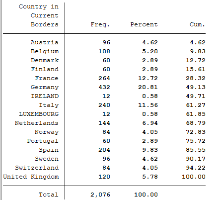
tab regionSummarize for summaries of numeric variables
summarize national_gdp_cap_1990 if year == 1950, detail
summarize regional_gdp_cap_1990 if year == 1950, detail
summarize regional_gdp_cap_1990 if year == 2000, detail
Tip
You can use the option , detail or simply , d after the summarize command to get summary values across the distribution, rather than just at the mean of the distribution.
Exporting summary tables
Here the outreg2 command makes a table in MS Word format. To learn more about outreg2, see this link.
outreg2 using sum_table.doc, replace sum(log) keep(regional_gdp_cap_1990) eqkeep(N mean sd) label
outreg2 if year == 1950 using sum_table_1950.doc, replace sum(log) keep(regional_gdp_cap_1990) eqkeep(N mean sd) labelWe can also use the browse command (shortened to br) to provide an easy to read summary within Stata.
sort year regional_gdp_cap_1990
br region country regional_gdp_cap_1990 if year == 1900 # compare with We can compare this summary with table 2.6 in the course book.
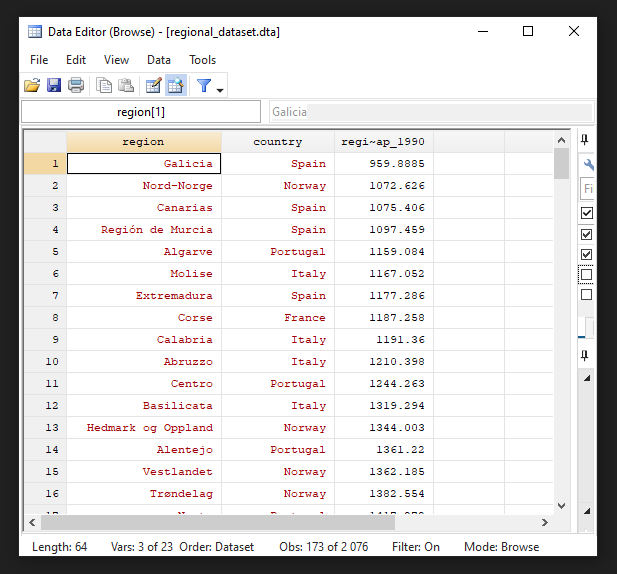
br region country regional_gdp_cap_1990 if year == 2010Basic maps
Now we get to the fun part! Let’s load our nice and tidy dataset.
use regional_dataset, clear
help spmapspmap is aimed at visualizing several kinds of spatial data, and is
particularly suited for drawing thematic maps and displaying the results
of spatial data analyses.
Basic command
Here we draw a map with just the outline of our regions. We use the nutscoord.dta file as our map.
spmap using "nutscoord.dta" if year == 1950, id(_ID)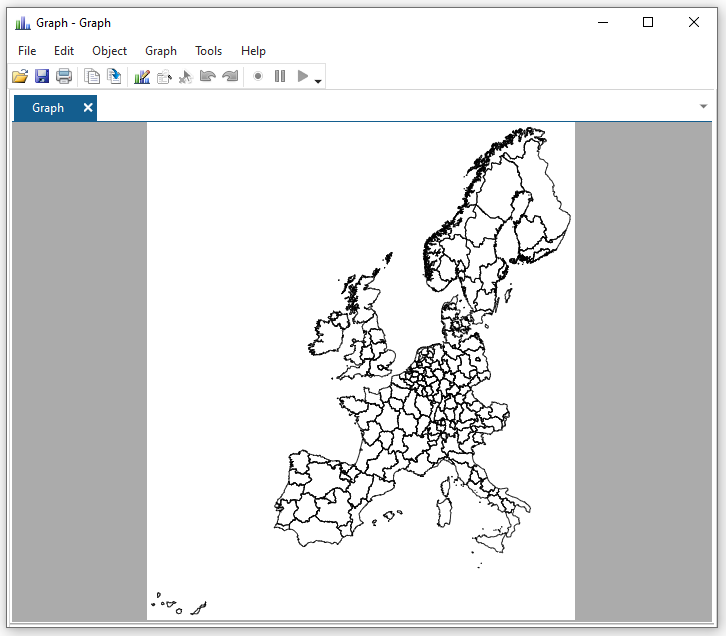
Adding titles and notes
spmap using "nutscoord.dta" if year == 1960, id(_ID) ///
title("My first Map", size(large)) ///
note("Source: Rosés-Wolf (2020)", size(vsmall) pos(5))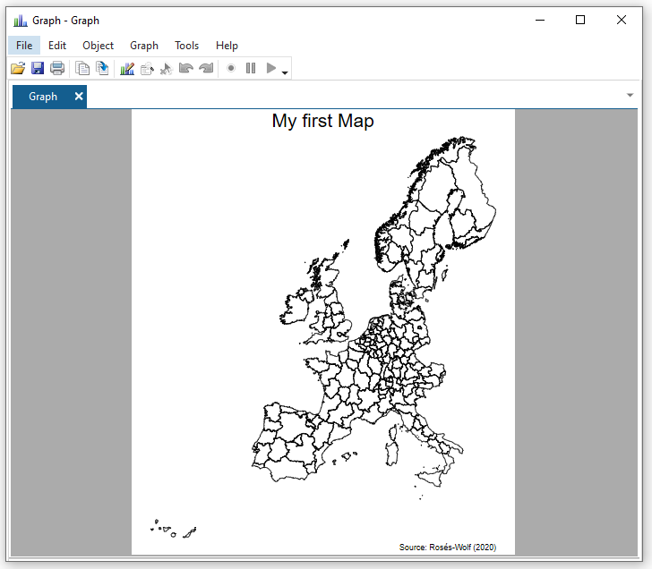
Introducing a fill
Let’s now map the variable for National GDP per capita to the fill aesthetic for the year 1950.
spmap national_gdp_cap_1990 using "nutscoord.dta" if year == 1950, id(_ID)Notice that we now get a legend in the bottom left hand corner that shows us what the different colours on the map mean. Look at Sweden and Denmark go!
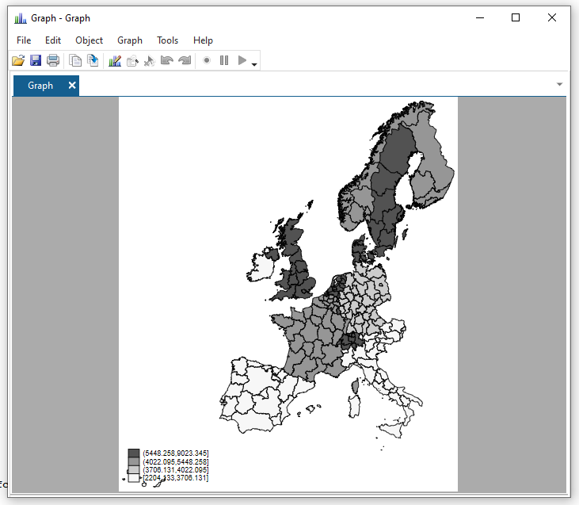
Change the colour palette
Here we use the palette Blues2 to specify what colours we want to fill our base map polygons.
spmap regional_gdp_cap_1990 using "nutscoord.dta" if year == 1950, id(_ID) fcolor(Blues2)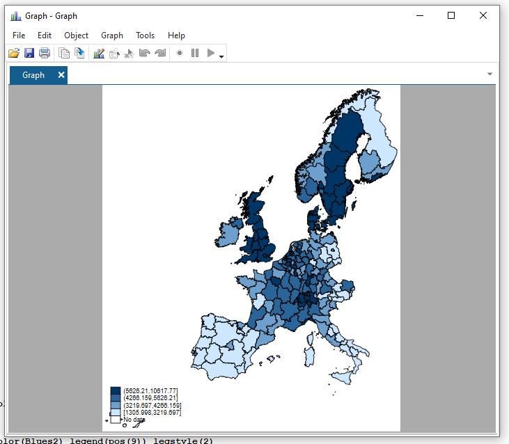
Change the formatting of the legend
spmap regional_gdp_cap_1990 using "nutscoord.dta" if year == 1950, id(_ID) fcolor(Blues2) legend(pos(9)) legstyle(2)That’s a bit better! The numbers still look horrid though.
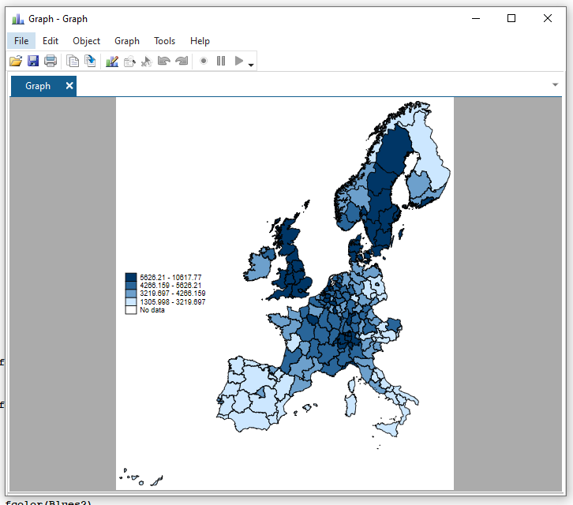
Fix legend formatting
help format // you can format any variable
format regional_gdp_cap_1990 %12.0fc // 12 numbers left of the decimal point; 0 to the right; commas to denote thousands
spmap regional_gdp_cap_1990 using "nutscoord.dta" if year == 1950, id(_ID) fcolor(Blues2) legend(pos(9)) legstyle(2)
Stata number formatting
In Stata, the number formatting for graphs is controlled by format codes.
The format code “%12.0fc” is a combination of four parts:
- “%12” specifies the number of spaces to the left of the decimal point, in this case 12 spaces.
- “.0” specifies the number of decimal places to be displayed, in this case 0.
- “f” specifies the data type, in this case a floating point number
- “c” specifies the format of the number, in this case including commas as the thousands separator.
In general, format codes can be used to control the appearance of numbers in tables, graphs and other outputs in Stata. Each format code has a combination of width, decimal places and data type specifiers to format the numbers as desired.
That’s better!
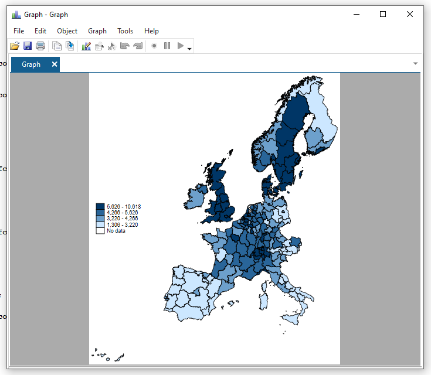
Change legend breaks and add a title
Let’s make the numbers in the legend more logical:
Tip
In Stata, the clmethod() command is used to specify the method for creating breaks (or intervals) on a color scale in a graph. The clbreaks() command is used to specify the values of the breaks.
In this specific example, the command “clmethod(custom) clbreaks(0 (1000) 12000)” is used to create a custom color scale with the following properties:
- The scale starts at 0.
- The gradations of the scale are 1,000.
- The top end of the scale is 12,000.
The clbreaks() command is set to “0 (1000) 12000” which means that the color scale starts at 0 and continues to increase in increments of 1,000 up to 12,000. In other words, the scale will have 12 breaks or intervals: 0, 1000, 2000, 3000, 4000, 5000, 6000, 7000, 8000, 9000, 10000, 11000, 12000.
This custom scale will be used to colour the data points in the graph accordingly.
It’s important to note that the command “clmethod(custom)” is required to use the custom breaks defined in the “clbreaks()” command.
The number of breaks is a stylistic choice and can impact the message that the reader takes away. Consider how the dark blue areas stand out in Sweden and the UK in the second figure, compared to the first.
(I think you see by now what the graph editor looks like - I’m saving the image from the editor from now on.)
spmap regional_gdp_cap_1990 using "nutscoord.dta" if year == 1950, id(_ID) fcolor(Blues2) legend(pos(9)) legstyle(2) ///
title("Regional GDP per Capita - 1950 ", size(medium)) ///
osize(0.02 ..) ocolor(gs8 ..) ///
clmethod(custom) clbreaks(0 (1000) 12000)spmap regional_gdp_cap_1990 using "nutscoord.dta" if year == 1950, id(_ID) fcolor(Blues2) legend(pos(9)) legstyle(1) ///
title("Regional GDP per Capita - 1950", size(medium)) ///
osize(0.02 ..) ocolor(white ..) ///
clmethod(custom) clbreaks(0 3000 (1000) 6000 12000)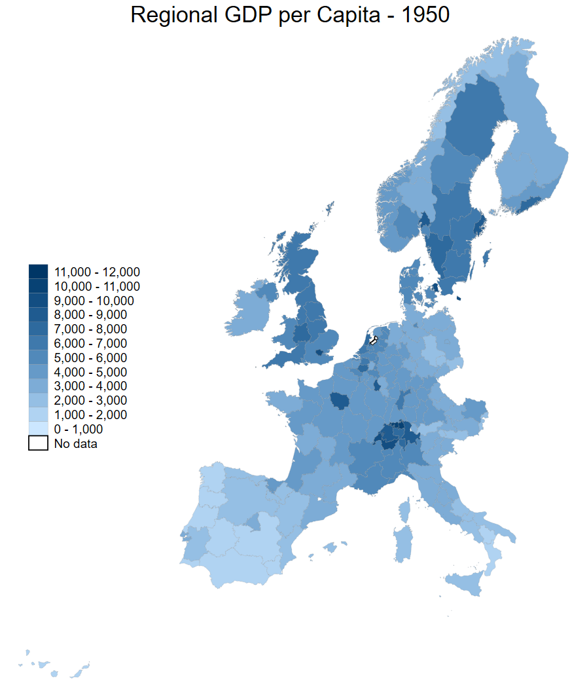
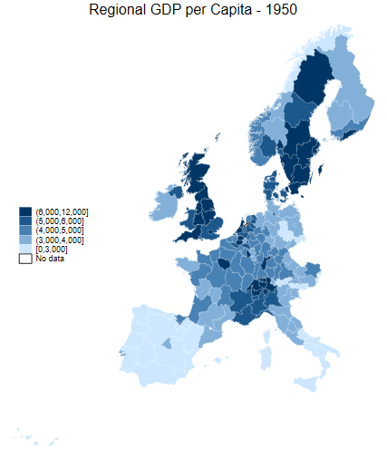
Comparison of breaks
What do we do about the areas with no data?
Let’s have a look at the employment share in industry.
Look at the North of the UK in 1950 - such a powerhouse!
Tip
The ndfcolor(gray) command makes areas with no data greyed out (note the US spelling of gray vs grey)
spmap employment_share_industry using "nutscoord.dta" if year == 1950, id(_ID) fcolor(Blues2) legend(pos(9)) legstyle(2) ///
title("Employment Share Industry - 1950", size(medium)) ///
osize(0.02 ..) ocolor(white ..) ///
ndfcolor(gray) ndocolor(none ..) ndsize(0.02 ..)
spmap employment_share_industry using "nutscoord.dta" if year == 1950, id(_ID) fcolor(Blues2) legend(pos(9)) legstyle(2) ///
title("Employment Share Industry - 1950", size(medium)) ///
osize(0.02 ..) ocolor(white ..) ///
clmethod(custom) clbreaks(0 (0.2) 0.8) ///
ndfcolor(gray) ndocolor(none ..) ndsize(0.02 ..)
spmap employment_share_industry using "nutscoord.dta" if year == 1950, id(_ID) fcolor(Blues2) legstyle(2) ///
title("Employment Share Industry - 1950", size(large)) ///
osize(0.02 ..) ocolor(white ..) ///
clmethod(custom) clbreaks(0 (0.2) 0.8) ///
legend(pos(9) size(medium) rowgap(1.5) label(5 "60-80 %") label(4 "40-60 %") ///
label(3 "20-40 %") label(2 "0-20 %") label(1 "No data")) ///
ndfcolor(gray) ndocolor(white ..) ndsize(0.02 ..)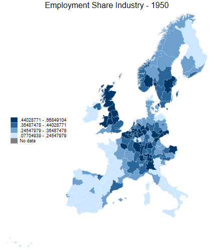
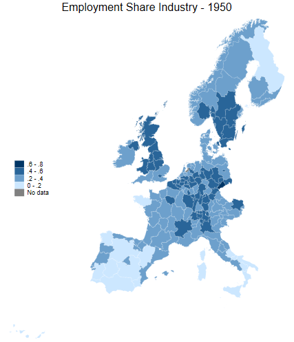
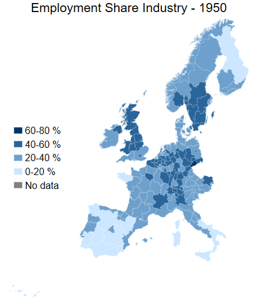
More legend comparisons